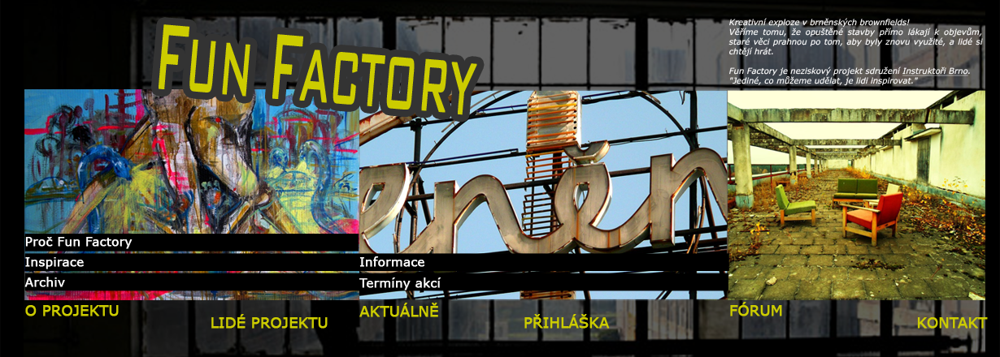
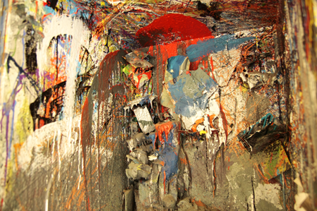
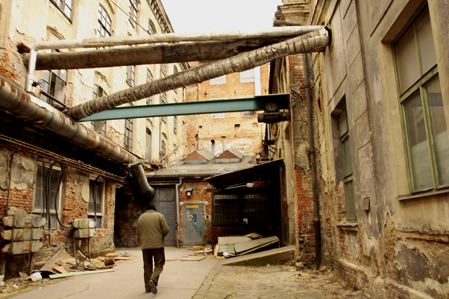
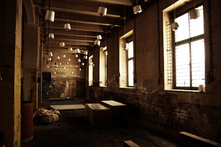

|  | |||||||||
Proč Fun Factory
V průběhu industriální éry, která měla velký vliv na architektonické utváření města Brna, vzniklo bezpočet budov, které už dnes neslouží svému původnímu účelu. V současné době zažívají první fázi obrození, kdy se využívají ke komerčním pronájmům nebo se do nich uchylují umělci s různými alternativními projekty. Věříme tomu, že opuštěné stavby přímo lákají k objevům, staré věci prahnou po tom, aby byly znovu využité, a lidé si chtějí hrát. Podle našich zkušenostní se lidé potřebují učit a hrát si v každém věku. Nám dospělým občas chybí jen vhodný čas, způsob a společnost. Nabízíme vám prostor, kde se můžete kreativně vyřádit bez toho, aby na vás někdo divně koukal. Prostor, kde můžete řvát, aniž by vám někdo říkal, že máte být ticho. A nakonec prostor, kde můžete ve společnosti ostatních vytvořit něco, o čem jste doposud nevěděli, že existuje. Projekt v sobě bude zahrnovat akce různorodého charakteru, které se budou jedna od druhé lišit svým specifičtějším zaměřením i prostorem. Společná jim bude volnější forma organizace a workshopový charakter. Lidé projektu jsou účastníci, organizátoři a kamarádi sdružení Instruktoři Brno. Instruktoři jsou skupina mladých lidí, které baví rozdávat zážitky sobě i ostatním. Spojuje je nadšení do všeho nového a chuť sáhnout si na hranice svých možností. Rádi poznávají sebe, ostatní i svět okolo sebe, v celé své barevnosti. To a mnohé další dále zprostředkovávají všem, kteří o to mají zájem - účastníkům jejich akcí. | Fotogalerie  | ||||||||